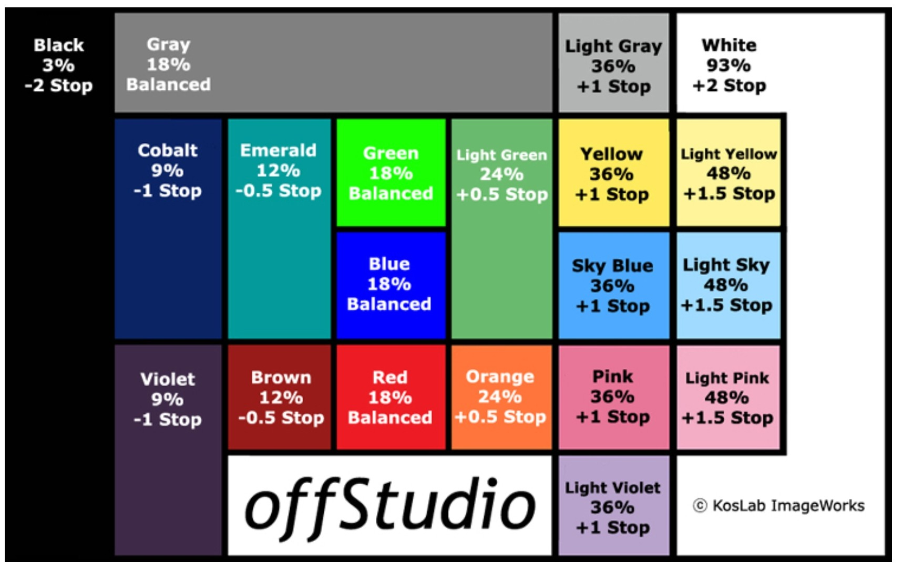
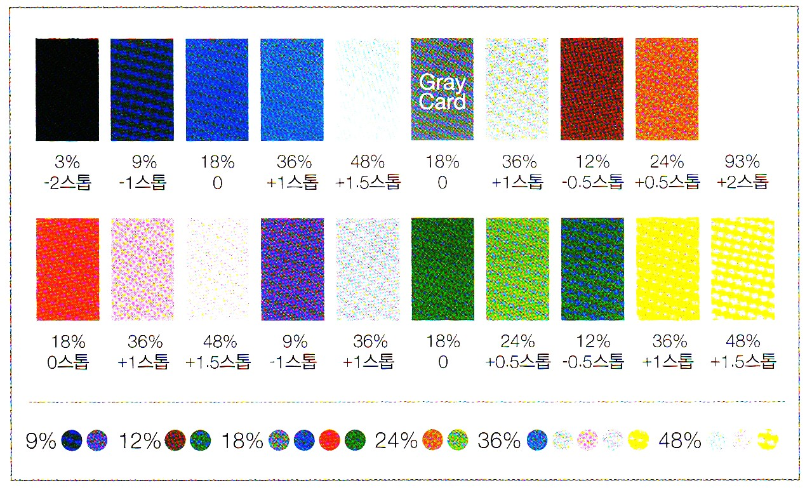

밝은 색(흰색, 밝은 회색 등) 은 대부분의 가시광선을 반사해 밝고 덜 더워 보이며, 어두운 색(검정, 어두운 회색 등) 은 빛을 많이 흡수해 어둡고 더워 보입니다. 무채색(흰색, 회색, 검정 등) 의 반사율은 가시광선 스펙트럼에서 거의 평행하게 나타나며, 예를 들어 흰색은 약 85% 이상, 검정은 3% 미만의 반사율을 가집니다.
측광설경사진에서 측광은 매우 중요하다. 무엇을 어떻게 측광하느냐에 따라 노출이 달라지기 때문이다. 측광을 제대로 하려면 먼저 색의 밝기를 알아야한다. 카메라 렌즈로 들어오는 빛은 피사체의 색이 가지고 있는 밝기이고, 색은 피사체에서 반사된 색이다. 예를 들어, 빨간 사과는 광원의 녹색과 파란색을 흡수하고 빨간색을 반사했기 때문에 빨간색으로 보인다.
피사체에서 반사되는 색은 색마다 다른 반사율을 가지고 있고, 이를 평균 낸 것이 19%의 평균반사율이다. 평균 반사율을 가지는 색은 빨간색, 녹색, 파란색과 회색이 있다. 카메라는 이 색들의 반사율을 기준으로 밝기를 측정한다.
다음 그림은 일반적인 색이 가지는 반사율을 표시한 것이다. 반사율이 높은 것은 밝은 톤, 낮은 것은 어두운 톤을 의미한다.
색이 갖는 반사율[그림출처 : Naver]
색이 갖는 반사율[그림출처 : [1]]
그럼 반사율에 따라 측광이 어떻게 적용되는지 알아보기로 하자. 흰 눈으로 덮인 벌판을 가정하면, 프레임 가득히 흰색이므로 어떠한 측광을 사용하더라도 카메라는 높은 반사율을 가진 빛을 받아들이게 된다. 그런데 대부분의 자동 노출 카메라는 18% 평균 반사율보다 밝은 빛이 들어오면 노출을 줄여 촬영하게끔 프로그램 되어 있다. 이로 인해 사진은 눈으로 본 것보다 어둡게 찍힌다. 다라서 원래의 밝기대로 사진을 찍으려면 1~2스톱 이상 노출을 더 주어야 한다.
반대로 깜깜한 밤하늘이 배경인 야경을 찍으면 사진은 생각한 것보다 밝게 찍힌다. 이 경우에는 -1~-2스톱 어둡게 찍어야 눈으로 본 야경의 밝기를 그대로 담을 수 있다.
흰 눈으로 뒤덮인 풍경흰 눈으로 뒤덮인 풍경인 경우 평균분할 또는 스팟 측광으로 촬영하면 사진이 어둡게 나온다. 즉, 흰색이 회색으로 나오게 되는데, 이런 경우에는 전체 프레임 대비 흰 눈이 차지하는 면적을 계산하여 노출을 보정하고 찍어야 한다.
설경을 배경으로 한 인물일 때설경을 배경으로 한 인물사진에서는 측광 방식에 따라 사진의 노출이 달라진다. 먼저, 평균분할 측광인 경우 배경과 인물의 면적을 비교하여 노출을 보정하고 촬영해야 한다. 다음으로, 스폿측광인 경우 스폿을 인물에 맞췄을 때 인물이 입고 있는 옷 색상에 유의한다. 원색인 빨강색, 녹색, 파란색을 입고 있다면 노출보정이 필요 없지만, 다른 색상의 옷을 입고 있을 때에는 노출을 보정해야 한다. 예를 들어 검정색의 등산 재킷을 입고 있는 인물을 찍으면서 재킷을 스폿 측광했다면 사진은 매우 밝게 찍히게 된다. 따라서 노출을 -1~-2스톱 낮춰 설정해야 한다.
[참고문헌]
[1]프로페셔널 사진의 조건/라이트룸5, 백종수, 이지스퍼블리싱, 2013.11.14.
....
....
....
....
....
....